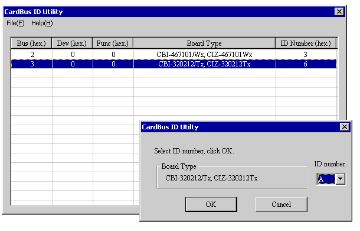

13. CardBus ID Configuration Utility Program
13.1 Configuring the ID Number
This utility program can configure the CardBus ID number. The ID number on each Interface CardBus card is used to uniquely identify each card, in case multiple Interface CardBus cards of the same type are installed in the same system. This ID number for CardBus card is the same meaning as the rotary switch number for PCI/CompactPCI boards. Therefore, the CardBus ID number is appeared as the rotary switch number (RSW1) on the diagnostic program or device manager.
1. After installing the driver software, click the Start button and point to Settings, and then click Control Panel. 2. Double-click Interface CardBus ID Utility, and then the CardBus ID Utility dialog box will appear.
Item
Description
Bus (hex) Bus number in hexadecimal Dev (hex) Device number in hexadecimal Func (hex) Function number in hexadecimal Board type Model ID Number (hex) CardBus ID number in hexadecimal 3. Select a card that you want to set the ID number. Then, another CardBus ID Utility dialog box will appear. 
4. Specify the ID number.
Notes: - Selectable ID number is in the range of 0h through Fh. - To recognize the card which changed the ID number, remove the card and insert it or restart the computer. - To identify each card, we recommend to put a sticker with the ID number on the card.
© 2000, 2013 Interface Corporation. All rights reserved.
[Top]